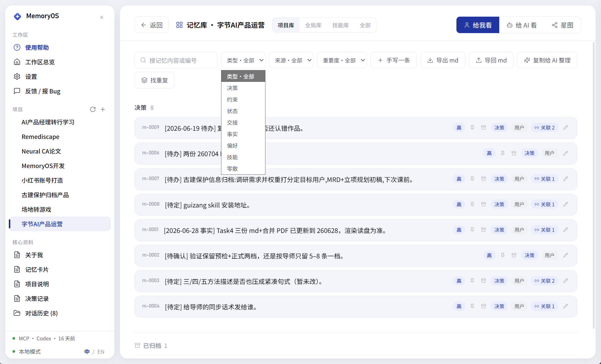
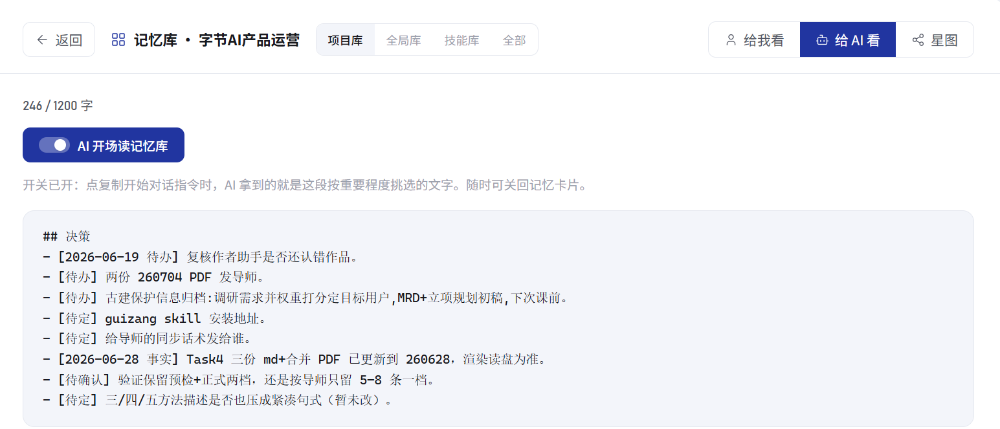
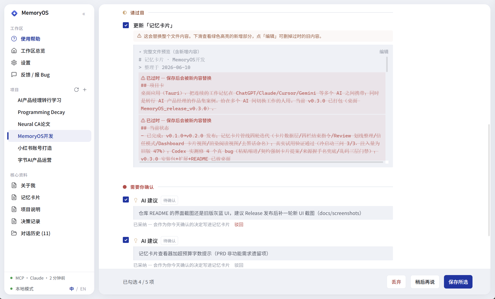
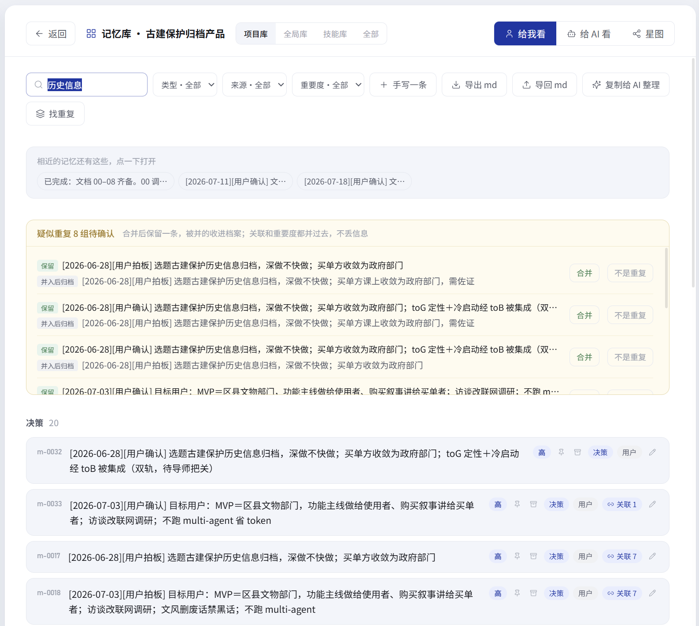
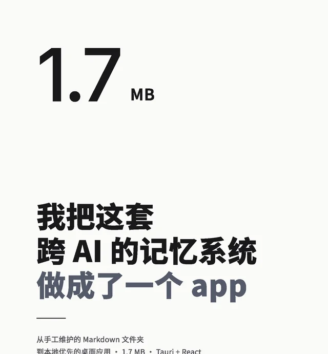
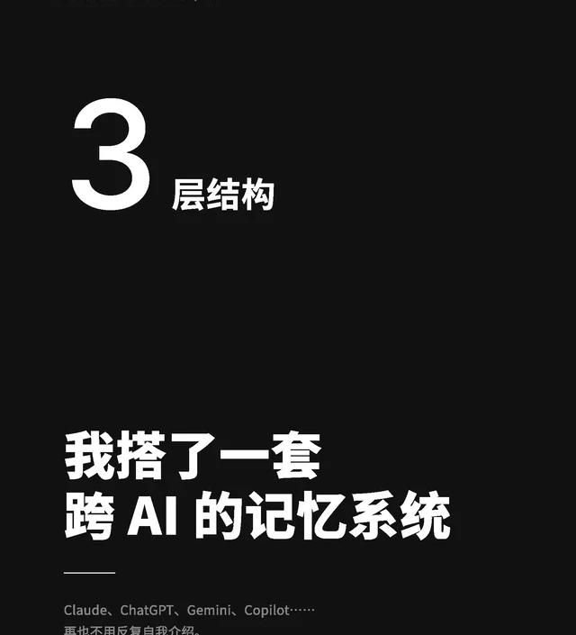
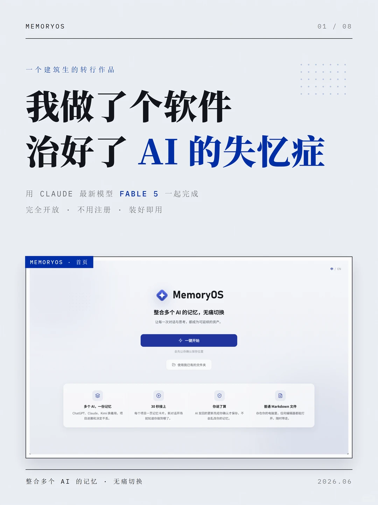

AI 产品 · 独立项目
AI 记忆产品
我把分散在项目和对话中的工作记忆整理成可确认、可检索的条目。新对话可以继续使用已有背景和决定。
产品策略
信息架构
AI 工作流程
搜索正文、编号或关联来源：全部重要度：全部
作品集先讲清产品结果M-01
首屏先说明用户问题、关键判断和当前结果，再展开过程材料。
AI 建议确认后写入M-02
普通更新可按项目设置自动处理。建议与冲突内容继续由用户确认。
相近文本匹配仍在优化M-03
当前按文本相似度补充结果。不同说法的识别准确度仍需验证。
作品集 展示顺序ENTER
项目库：求职准备类型：决策来源：全部重要度：高
找到 6 条相关记忆3 条直接命中 · 2 条关联结果 · 1 条相近匹配
首屏先说明用户问题、关键判断和当前结果，再展开过程材料。
决策 · 用户 · 高重要度
产品项目优先展示，毕业设计视频与公开内容放在后续区域。
约束 · 用户 · 关联：作品集结构
首页提供项目入口，详情页说明问题、判断、方案、验证和下一步。
决策 · AI 建议已确认 · 高重要度
✓作品集首页将 AI 记忆产品和古建归档产品放在文章、视频之前。
先讲用户问题、产品判断和使用结果，再补充必要的实现信息。
全选新增记忆AI 建议保持待审冲突内容会单独提示
分类、来源与重要度
开场读取与字数预算
新增内容确认
相近内容与重复处理

项目起点
我为什么开始做 AI 记忆产品
15 赞 · 小红书
查看相关公开记录 ↗

产品结构
AI 记忆产品的功能结构如何形成
9 赞 · 小红书
查看相关公开记录 ↗

产品开发
建筑背景如何参与 AI 产品开发
13 赞 · 小红书
查看小红书原文 ↗
用户问题
反复补充背景
切换对话或 AI 工具后，需要重新说明项目目标、偏好和已有决定。
产品目标
保留项目背景与进度
用户可以查看内容的来源、分类和调用条件，也可以随时修改。
我的工作
从需求到原型
整理问题和使用记录，确定需求优先级，再设计信息结构和使用流程。
优先级 1
先保证内容准确
条目记录类型、来源和重要度。AI 提出的调整进入待审，由用户决定是否写入。
优先级 2
重要内容先出现
界面和 AI 读取使用同一套重要度规则。钉住的内容不会自动降级或归档。
优先级 3
新对话延续现有进度
对话开始时读取相关记忆。信息不足时，AI 再检索已有决定、约束和方法。
存储
保存为独立条目
系统将记忆存为独立条目，按八种类型整理到项目库、全局库和技能库。
检索
检索相关内容
按关键词、编号、类型、来源和重要度检索。结果会补充关联条目和相近文本。
读取
开场读取，按需检索
开场读取重点条目。信息不足时，AI 可以继续检索旧内容。
第一阶段｜调整存储结构
从整页卡片改为独立条目
每条记忆可以分类、编辑和关联，并进入项目库、全局库或技能库。
第二阶段｜完善内容管理
记录来源和重要度
新增来源、重要度、钉住、归档和捞回。用户可以控制内容的保留方式。
第三阶段｜完善写入与读取
开场读取，后续按需检索
AI 开场读取重点条目，过程中查询旧决定，对话结束后提交新增记忆供用户确认。
已经完成
写入、检索和读取已经连通
系统可以写入记忆条目，用户和 AI 都能检索。用户确认更新后，内容进入下一次读取。
继续验证
检索结果与外部使用
相近文本匹配仍需优化。权限控制、跨 AI 自动共享和外部用户反馈尚未验证。